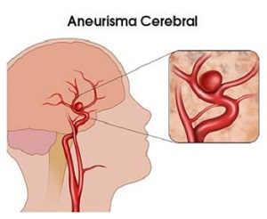

El aneurisma es una zona débil en la pared de un vaso sanguíneo que provoca que éste sobresalga o se abombe. Cuando se presenta un aneurisma en un vaso sanguíneo del cerebro, se denomina aneurisma cerebral o intracraneal.

Los aneurismas en el cerebro ocurren cuando hay una zona debilitada en la pared de
un vaso sanguíneo. Un aneurisma puede estar presente desde el nacimiento (congénito).
También puede desarrollarse más adelante en el transcurso de la vida.
Existen muchos tipos de aneurismas cerebrales. El más común se llama aneurisma
sacciforme. Este tipo puede variar de tamaño desde unos pocos milímetros a más de
un centímetro. Los aneurismas sacciformes gigantes pueden superar los 2.5 cm.
Estos aneurismas son más comunes en los adultos. Los aneurismas sacciformes,
especialmente cuando existe más de uno, algunas veces se heredan de padres a hijos.
Otros tipos de aneurismas cerebrales implican un ensanchamiento de todo un vaso
sanguíneo. También pueden aparecer como un abombamiento de una parte de un vaso
sanguíneo. Estos tipos de aneurismas se pueden presentar en cualquiera de los vasos
sanguíneos que irrigan el cerebro. El endurecimiento de las arterias
(ateroesclerosis), un traumatismo y una infección pueden todos ellos lesionar la
pared vascular y todos pueden ocasionar aneurismas cerebrales.
Los aneurismas cerebrales son comunes. Una de cada cincuenta personas tiene un
aneurisma en el cerebro, pero solo un pequeño número de estos aneurismas causa
síntomas o ruptura.
Un dolor de cabeza repentino e intenso es el síntoma clave de la rotura de un
aneurisma. Este dolor de cabeza suele describirse como el peor dolor de cabeza
que puedas sentir.
Los signos y síntomas frecuentes de la rotura de un aneurisma son:
En algunos casos, un aneurisma puede filtrar una pequeña cantidad de sangre. Esta filtración (sangrado centinela) puede causar solamente dolor de cabeza repentino y muy intenso
Es posible que un aneurisma sin rotura no produzca síntomas, especialmente, si es pequeño. Sin embargo, un aneurisma sin rotura más grande puede ejercer presión sobre los tejidos y los nervios del cerebro, lo que posiblemente provoque:
Si sufres un dolor de cabeza repentino e intenso, u otros síntomas posiblemente relacionados con la ruptura de un aneurisma, se te realizará un análisis o una serie de análisis para determinar si has tenido sangrado en la zona entre el cerebro y los tejidos circundantes (hemorragia subaracnoidea) o posiblemente otro tipo de accidente cerebrovascular. Entre las pruebas de diagnóstico se incluyen las siguientes:
Existen dos opciones frecuentes de tratamiento para la rotura de un aneurisma cerebral.
Los tratamientos más actuales disponibles para el aneurisma cerebral comprenden desviadores de flujo,implantes tubulares similares a los stents que desvían el flujo sanguíneo para que no llegue al saco del aneurisma. El desvío detiene el movimiento de la sangre dentro del aneurisma y, de esta manera, estimula al organismo a curar el sitio, lo que fomenta la reconstrucción de la arteria principal. Los desviadores de flujo pueden ser especialmente útiles en aneurismas más grandes que no pueden tratarse con otras opciones de manera segura.
Durante la primera fase, del 10 al 15 % de los pacientes que han sufrido
la ruptura de un aneurisma cerebral correrá riesgo de muerte inmediato antes de
llegar a la sala de emergencias y ¡más del 50% podrá fallecer dentro de los primeros 30 días
posteriores de producida la HSA inicial.
De los sobrevivientes de esta fase, el 30% correrá el riesgo de sufrir una
nueva hemorragia durante las primeras 2 semanas posteriores.
Entre un 20% y un 40% de quienes reciben tratamiento podrá morir dutante los primeros 6 meses, y
hay una fracción de entre el 15% y el 25% que sufrirá secuelas neuropsicológicas permanentes.